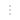

AltaIDE / Компоненты
IconToolbarsTBVertical
Набор иконок интерфейса.
Варианты
| Type | Компонент |
|---|---|
| Settings | |
| Search | |
| Filtr | |
| Table | |
| Info | |
| CodeEdit | |
| More |  |
| LineDown | |
| LineUP |
Состояния
| Default | Active | Disabled |
|---|---|---|
Набор иконок интерфейса.
| Type | Компонент |
|---|---|
| Settings | |
| Search | |
| Filtr | |
| Table | |
| Info | |
| CodeEdit | |
| More |  |
| LineDown | |
| LineUP |
| Default | Active | Disabled |
|---|---|---|